|
Table of Content | Chapter Sixteen (Part 3) |
|
Table of Content | Chapter Sixteen (Part 3) |
| CHAPTER SIXTEEN: PATTERN MATCHING (Part 2) |
| 16.1.2.2 -
Nondeterministic Finite State Automata (NFAs) 16.1.2.3 - Converting Regular Expressions to NFAs 16.1.2.4 - Converting an NFA to Assembly Language |
An NFA is a directed graph with state numbers associated with each node and characters or character strings associated with each edge of the graph. A distinguished state, the starting state, determines where the machine begins attempting to match an input string. With the machine in the starting state, it compares input characters against the characters or strings on each edge of the graph. If a set of input characters matches one of the edges, the machine can change states from the node at the start of the edge (the tail) to the state at the end of the edge (the head).
Certain other states, known as final or accepting states, are usually present as well. If a machine winds up in a final state after exhausting all the input characters, then that machine accepts or matches that string. If the machine exhausts the input and winds up in a state that is not a final state, then that machine rejects the string. Figure 16.1 shows an example NFA for the floating point RE presented earlier.
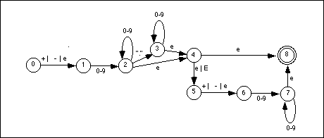
By convention, we'll always assume that the starting state is state zero. We will denote final states (there may be more than one) by using a double circle for the state (state eight is the final state above).
An NFA always begins with an input string in the starting
state (state zero). On each edge coming out of a state there is either  , a single
character, or a character string. To help unclutter the NFA diagrams, we will allow
expressions of the form " xxx | yyy | zzz | " where xxx, yyy, and zzz are
, a single
character, or a character string. To help unclutter the NFA diagrams, we will allow
expressions of the form " xxx | yyy | zzz | " where xxx, yyy, and zzz are  , a single
character, or a character string. This corresponds to multiple edges from one state to the
other with a single item on each edge. In the example above,
, a single
character, or a character string. This corresponds to multiple edges from one state to the
other with a single item on each edge. In the example above,
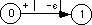
is equivalent to
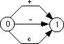
Likewise, we will allow sets of characters, specified by a string of the form x-y, to denote the expression x | x+1 | x+2 | ... | y.
Note that an NFA accepts a string if there is some path from the starting state to an accepting state that exhausts the input string. There may be multiple paths from the starting state to various final states. Furthermore, there may be some particular path from the starting state to a non-accepting state that exhausts the input string. This does not necessarily mean the NFA rejects that string; if there is some other path from the starting state to an accepting state, then the NFA accepts the string. An NFA rejects a string only if there are no paths from the starting state to an accepting state that exhaust the string.
Passing through an accepting state does not cause the NFA to accept a string. You must wind up in a final state and exhaust the input string.
To process an input string with an NFA, begin at the
starting state. The edges leading out of the starting state will have a character, a
string, or  associated
with them. If you choose to move from one state to another along an edge with a single
character, then remove that character from the input string and move to the new state
along the edge traversed by that character. Likewise, if you choose to move along an edge
with a character string, remove that character string from the input string and switch to
the new state. If there is an edge with the empty string,
associated
with them. If you choose to move from one state to another along an edge with a single
character, then remove that character from the input string and move to the new state
along the edge traversed by that character. Likewise, if you choose to move along an edge
with a character string, remove that character string from the input string and switch to
the new state. If there is an edge with the empty string,  , then you may
elect to move to the new state given by that edge without removing any characters from the
input string.
, then you may
elect to move to the new state given by that edge without removing any characters from the
input string.
Consider the string "1.25e2" and the NFA in
Figure 16.1. From the starting state we can move to state one using the  string (there
is no leading plus or minus, so
string (there
is no leading plus or minus, so  is our only
option). From state one we can move to state two by matching the "1" in our
input string with the set 0-9; this eats the "1" in our input string leaving
".25e2". In state two we move to state three and eat the period from the input
string, leaving "25e2". State three loops on itself with numeric input
characters, so we eat the "2" and "5" characters at the beginning of
our input string and wind up back in state three with a new input string of
"e2". The next input character is "e", but there is no edge coming out
of state three with an "e" on it; there is, however, an
is our only
option). From state one we can move to state two by matching the "1" in our
input string with the set 0-9; this eats the "1" in our input string leaving
".25e2". In state two we move to state three and eat the period from the input
string, leaving "25e2". State three loops on itself with numeric input
characters, so we eat the "2" and "5" characters at the beginning of
our input string and wind up back in state three with a new input string of
"e2". The next input character is "e", but there is no edge coming out
of state three with an "e" on it; there is, however, an  -edge, so we
can use that to move to state four. This move does not change the input string. In state
four we can move to state five on an "e" character. This eats the "e"
and leaves us with an input string of "2". Since this is not a plus or minus
character, we have to move from state five to state six on the
-edge, so we
can use that to move to state four. This move does not change the input string. In state
four we can move to state five on an "e" character. This eats the "e"
and leaves us with an input string of "2". Since this is not a plus or minus
character, we have to move from state five to state six on the  edge. Movement
from state six to state seven eats the last character in our string. Since the string is
empty (and, in particular, it does not contain any digits), state seven cannot loop back
on itself. We are currently in state seven (which is not a final state) and our input
string is exhausted. However, we can move to state eight (the accepting state) since the
transition between states seven and eight is an
edge. Movement
from state six to state seven eats the last character in our string. Since the string is
empty (and, in particular, it does not contain any digits), state seven cannot loop back
on itself. We are currently in state seven (which is not a final state) and our input
string is exhausted. However, we can move to state eight (the accepting state) since the
transition between states seven and eight is an  edge. Since we
are in a final state and we've exhausted the input string, This NFA accepts the input
string.
edge. Since we
are in a final state and we've exhausted the input string, This NFA accepts the input
string.
16.1.2.3 Converting Regular Expressions to NFAs
If you have a regular expression and you want to build a machine that recognizes strings in the regular language specified by that expression, you will need to convert the RE to and NFA. It turns out to be very easy to convert a regular expression to an NFA. To do so, just apply the following rules:
If a regular expression contains an  , a single
character, or a string, create two states and draw an arc between them with
, a single
character, or a string, create two states and draw an arc between them with  , the single
character, or the string as the label. For example, the RE "a" is converted to
an NFA as
, the single
character, or the string as the label. For example, the RE "a" is converted to
an NFA as
Let the symbol
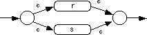
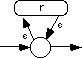
All of the other forms of regular expressions are easily synthesized from these, therefore, converting those other forms of regular expressions to NFAs is a simple two-step process, convert the RE to one of these forms, and then convert this form to the NFA. For example, to convert r+ to an NFA, you would first convert r+ to rr*. This produces the NFA:
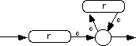
The following example converts the regular expression for
an integer constant to an NFA. The first step is to create an NFA for the regular
expression (+ | - |  ). The
complete construction becomes
). The
complete construction becomes
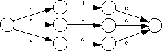
Although we can obviously optimize this to
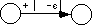
The next step is to handle the [0-9]+ regular expression; after some minor optimization, this becomes the NFA
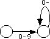
Now we simply concatenate the results to produce:
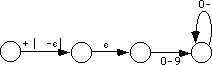
All we need now are starting and final states. The starting state is always the first state of the NFA created by the conversion of the leftmost item in the regular expression. The final state is always the last state of the NFA created by the conversion of the rightmost item in the regular expression. Therefore, the complete regular expression for integer constants (after optimizing out the middle edge above, which serves no purpose) is
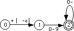
16.1.2.4 Converting an NFA to Assembly Language
There is only one major problem with converting an NFA to an appropriate matching function - NFAs are nondeterministic. If you're in some state and you've got some input character, say "a", there is no guarantee that the NFA will tell you what to do next. For example, there is no requirement that edges coming out of a state have unique labels. You could have two or more edges coming out of a state, all leading to different states on the single character "a". If an NFA accepts a string, it only guarantees that there is some path that leads to an accepting state, there is no guarantee that this path will be easy to find.
The primary technique you will use to resolve the nondeterministic behavior of an NFA is backtracking. A function that attempts to match a pattern using an NFA begins in the starting state and tries to match the first character(s) of the input string against the edges leaving the starting state. If there is only one match, the code must follow that edge. However, if there are two possible edges to follow, then the code must arbitrarily choose one of them and remember the others as well as the current point in the input string. Later, if it turns out the algorithm guessed an incorrect edge to follow, it can return back and try one of the other alternatives (i.e., it backtracks and tries a different path). If the algorithm exhausts all alternatives without winding up in a final state (with an empty input string), then the NFA does not accept the string.
Probably the easiest way to implement backtracking is via procedure calls. Let us assume that a matching procedure returns the carry flag set if it succeeds (i.e., accepts a string) and returns the carry flag clear if it fails (i.e., rejects a string). If an NFA offers multiple choices, you could implement that portion of the NFA as follows:
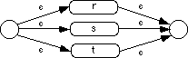
AltRST proc near
push ax ;The purpose of these two instructions
mov ax, di ; is to preserve di in case of failure.
call r
jc Success
mov di, ax ;Restore di (it may be modified by r).
call s
jc Success
mov di, ax ;Restore di (it may be modified by s).
call t
Success: pop ax ;Restore ax.
ret
AltRST endp
If the r matching procedure succeeds, there is
no need to try s and t. On the other hand, if r
fails, then we need to try s. Likewise, if r and s
both fail, we need to try t. AltRST will fail only if r,
s, and t all fail. This code assumes that es:di
points at the input string to match. On return, es:di points at the next
available character in the string after a match or it points at some arbitrary point if
the match fails. This code assumes that r, s, and t
all preserve the ax register, so it preserves a pointer to the current point
in the input string in ax in the event r or s fail.
To handle the individual NFA associated with simple regular
expressions (i.e., matching  or a single
character) is not hard at all. Suppose the matching function r matches the regular
expression (+ | - |
or a single
character) is not hard at all. Suppose the matching function r matches the regular
expression (+ | - |  ). The
complete procedure for r is
). The
complete procedure for r is
r proc near
cmp byte ptr es:[di], '+'
je r_matched
cmp byte ptr es:[di], '-'
jne r_nomatch
r_matched: inc di
r_nomatch: stc
ret
r endp
Note that there is no explicit test for  . If
. If  is one of the
alternatives, the function attempts to match one of the other alternatives first. If none
of the other alternatives succeed, then the matching function will succeed anyway,
although it does not consume any input characters (which is why the above code skips over
the
is one of the
alternatives, the function attempts to match one of the other alternatives first. If none
of the other alternatives succeed, then the matching function will succeed anyway,
although it does not consume any input characters (which is why the above code skips over
the inc di instruction if it does not match "+" or "-").
Therefore, any matching function that has  as an
alternative will always succeed.
as an
alternative will always succeed.
Of course, not all matching functions succeed in every
case. Suppose the s matching function accepts a single decimal digit. the
code for s might be the following:
s proc near
cmp byte ptr es:[di], '0'
jb s_fails
cmp byte ptr es:[di], '9'
ja s_fails
inc di
stc
ret
s_fails: clc
ret
s endp
If an NFA takes the form:
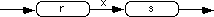
Where x is any arbitrary character or string
or  , the
corresponding assembly code for this procedure would be
, the
corresponding assembly code for this procedure would be
ConcatRxS proc near
call r
jnc CRxS_Fail ;If no r, we won't succeed
; Note, if x=e then simply delete the following three statements.
; If x is a string rather than a single character, put the the additional
; code to match all the characters in the string.
cmp byte ptr es:[di], 'x'
jne CRxS_Fail
inc di
call s
jnc CRxS_Fail
stc ;Success!
ret
CRxS_Fail: clc
ret
ConcatRxS endp
If the regular expression is of the form r* and the corresponding NFA is of the form
Then the corresponding 80x86 assembly code can look something like the following:
RStar proc near
call r
jc RStar
stc
ret
RStar endp
Regular expressions based on the Kleene star always succeed since they allow zero or more occurrences. That is why this code always returns with the carry flag set.
The Kleene Plus operation is only slightly more complex, the corresponding (slightly optimized) assembly code is
RPlus proc near
call r
jnc RPlus_Fail
RPlusLp: call r
jc RPlusLp
stc
ret
RPlus_Fail: clc
ret
RPlus endp
Note how this routine fails if there isn't at least one
occurrence of r.
A major problem with backtracking is that it is potentially inefficient. It is very easy to create a regular expression that, when converted to an NFA and assembly code, generates considerable backtracking on certain input strings. This is further exacerbated by the fact that matching routines, if written as described above, are generally very short; so short, in fact, that the procedure calls and returns make up a significant portion of the execution time. Therefore, pattern matching in this fashion, although easy, can be slower than it has to be.
This is just a taste of how you would convert REs to NFAs to assembly language. We will not go into further detail in this chapter; not because this stuff isn't interesting to know, but because you will rarely use these techniques in a real program. If you need high performance pattern matching you would not use nondeterministic techniques like these. If you want the ease of programming offered by the conversion of an NFA to assembly language, you still would not use this technique. Instead, the UCR Standard Library provides very powerful pattern matching facilities (which exceed the capabilities of NFAs), so you would use those instead; but more on that a little later.
|
Table of Content | Chapter Sixteen (Part 3) |
Chapter Sixteen: Pattern Matching
(Part 2)
29 SEP 1996